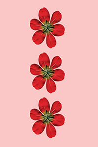
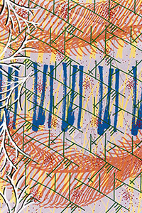
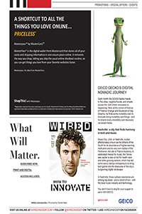
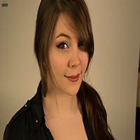
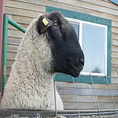
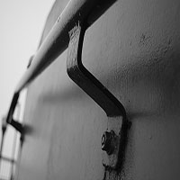
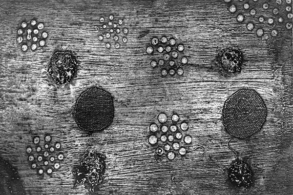
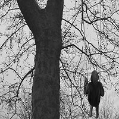
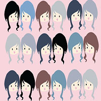

This public service anouncement poster was created as part of the brand identity for Northwest Museum of Arts and Culture. It informs viewers about events that occured during December.

Transformation
This tranformation project was created in Digital Art with tools such as a scanography and Photoshop. My job was to create an original image from scanning chosen objects and using the pen tool to "cut out" these objects.

Remix Collaboration
Similar to the previous project, this remix project was a collaboration between myself and another student in Digital Art. Creating custom brushes using drawings on sticky notes,

Measure to Instruct
Measure to Construct was a project where I was asked to measure the height of typefaces, strokes, images, etc. from a paged ripped out of a magazine. Next, I had to recreate the page using the information I collected.

Commercial Photography
As part of a made up Starbucks commercial photography project, I had to capture people's overall reaction to how he or she felt about the company. Here, I have Madeline smiling after having the products.

Photography Final
As part of my final photography project, I had to take a picture of a subject of my choice.

I See Letters
As part of the I See Letters project, I had to walk around Cheney and Spokane and take photos of objects that looked like letters. Here, this was supposed to be an image of a Z.

Collagraph Print
One of the first printmaking projects I did was to make a collograph plate using gloss medium, gesso and other mediums.

Illusion Imagery
Illusion is a project that was created using three seperate images. By using Photoshop, I was able to use the masking tool to create a cloudy, dreamy and nostalgic effect.

Character Illustration
This character project was made using Illustrator. It is meant to serve as a repetition poster. From far away, it kind of looks like a painting.